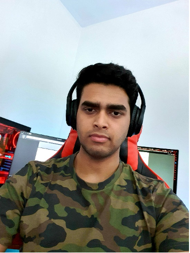

Name: Alex Joy
Student Number: s3883194
Student Email: s3883194@student.rmit.edu.au
Here is a picure of me:

Hi there, my name is Alex Joy and I am 19 years old and would love to tell a bit about who I am and what I like. I was born in Kerala, a large state on the bottom part of India. Me and my family love the place and made it a family tradition to visit there every 2 years. Most if not all my relatives are still in India and always want to know things work in upside-down Australia. They are so fascinated by the way things are here, like the roads, the shops, the animals etc. As I did live in India from a young age, I learnt a language called Malayalam, a fun fact about the name of this language is that the name spelt is the same backwards as forwards making it a palindrome. When I was five my parents decided to move overseas first to New Zealand and then to Australia for better education and overall living. An interesting thing about me is that I love to play baseball, and have been playing for over 10 years now.
I started school and finally learn what computers where, and how intricate and vastly evolving it was. As a kid I was excited to learn so much and still haven’t scratched the surface today. I elected to do a lot of tech related classes at school, which made me more interested. I became the technology captain at school which I thought was cool. High school took it another level with actual projects and implementing the very basics I knew into full scale working models. From the very beginning I wanted to be a police officer, but as I got older, I leaned towards tech even more. So, I decided to combine the two and work in both fields. After high school I joined police run course for a year that taught the fundamentals of police operations and law, which helped me get into the police requirement process. The start of this degree did not go as planned, as I was misinformed of the starting date. But my hopes are still high and am looking forward to learning more about technology.
And that’s where I’m at this current point. I have everything planned, but also understand that there might be problems and issues on the way. But I am determined to reach my end goal, which is to enjoy and embrace all the wonderful things tech has to offer.